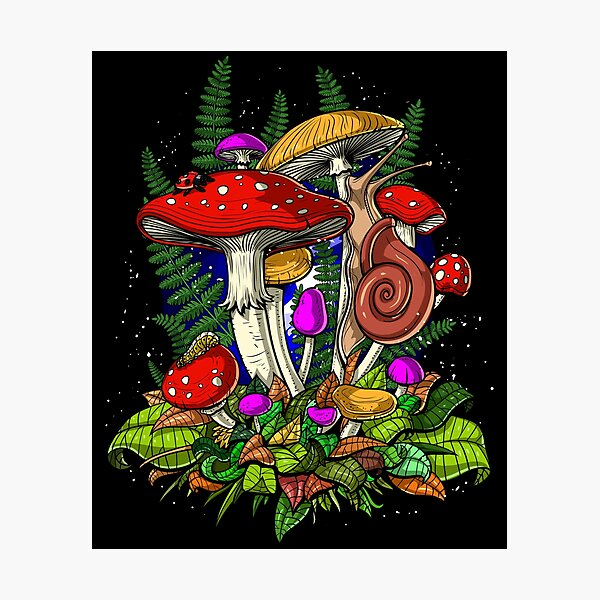

Bountiful Foods
Southern California is home to several coastal areas with a significant presence of organic food producers that we are proud to be a part of. The types of organic crops we grow in the region include avocados, lettuce,Avocado, Berries (strawberries, blueberries, raspberries, blackberries), Citrus fruits (oranges, lemons, limes, grapefruits), Grapes, Leafy greens (lettuce, spinach, kale, arugula), Melons (watermelon, cantaloupe, honeydew), Tomatoes, Carrots, Cucumbers and Peppers, among others.
Weather
Temperature
Weather Description
Weather Forecast